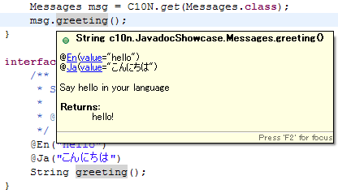

This project is maintained by rodionmoiseev
With c10n, there are two ways to manage translated messages:
Unless you really need to use resource bundles, give the annotation-based approach a try.
Here's how a typical internationalised programme would look like:
/**
* All translations are bound to an interface method. Note the arguments.
*/
@C10NMessages //only required when using composition. See CalendarWidgetComposed class below
public interface Buttons{
@En("OK")
@Ru("Да")
String ok();
@En("Cancel")
@Ru("Отмена")
String cancel();
@En("Are you sure you want to {0}?")
@Ru("Вы уверены что хотите {0}?")
String confirmationText(String action);
}
/**
* A class using the messages.
*/
public class ConfirmationDialogWindow {
private static final Buttons msg = C10N.get(Buttons.class);
private final JButton okButton = new JButton(msg.ok());
private final JButton cancelButton = new JButton(msg.cancel());
private final JButton confirmButton = new JButton(msg.confirmationText("my action"));
...
}
Interfaces containing messages may extend or compose with other interfaces to allow you to structure and modularise your code as you see fit. For example:
public interface CalendarWidget extends Buttons{
@En("Calendar")
@Ru("Календарь")
String widgetTitle();
}
// or if you prefer composition
public interface CalendarWidgetComposed{
//Currently requires Buttons class to be
//annotated with @C10NMessages annotation to work
Buttons buttons();
@En("Calendar")
@Ru("Календарь")
String widgetTitle();
}
/*
* Using the above is as you would expect
*/
public class CalendarWidgetWindow{
private CalendarWidget cal = C10N.get(CalendarWidget.class);
private JButton okButton = new JButton(cal.ok());
// OR using composition
private CalendarWidgetComposed calC = C10N.get(CalendarWidgetComposed.class);
private JButton okButtonC = new JButton(calC.buttons().ok());
}
The concept works for small projects as well as for large ones. If you ever need to turn back to using the text-based resource bundles you can still do so by using the resource bundle support feature (link: work-in-progress).
Tip: Default C10N annotations will also appear in the JavaDoc. Most IDEs (e.g. Eclipse, IntelliJ IDEA, etc.) will give you a preview of the JavaDoc when you mouse-over the method calling code:

Each of the method annotations (such as @En and @Ru) are predefined to bind to a particular locale.
C10N contains a predefined set of bindings for each of the language locale constants in the java.util.Locale API.
In order just use the predefined annotations, include them in your C10N.configure(), as follows:
public static void main(String[] args){
/*
* put this code before you access your c10n messages
*/
C10N.configure(new DefaultC10NAnnotations());
}
You can additionally bind your own annotations:
/*
* Annotation must have RUNTIME retention
* and must declare a `String value()` method
*/
@Target(ElementType.METHOD)
@Retention(RetentionPolicy.RUNTIME)
@Documented
public @interface MyLanguage {
String value();
}
@Target(ElementType.METHOD)
@Retention(RetentionPolicy.RUNTIME)
public @interface Default {
String value();
}
public static void main(String[] args){
C10N.configure(new C10NConfigBase(){
@Override
public void configure() {
install(new DefaultC10NAnnotations());
bindAnnotation(MyLanguage.class).toLocale(new Locale("my","locale"));
// fallback to this annotation if no better match found
bindAnnotation(Default.class);
}
});
}
The @Documented meta-annotation is optional, but is useful for making sure translations get generated
in the JavaDoc, as well as this nice IDE bonus.
Note: Locale search algorithm is the same as the one for Java resource bundles.
Since version 1.1
When you need to store a whole chunk of text, such as license file, in a locale-sensitive manner,
you can tell C10N to load content from an external file, using the extRes method in your annotation:
@C10NMessages
public interface Messages{
//locale mapped external file resources (or http, etc)
@En(extRes="file:///absolute/path/text.txt")
@Ja(extRes="file://../relative/path/text.txt")
String textFileContents();
}
Each locale can specify a custom external resource to fetch translated contents from.
Alternatively, you can use the intRes method, in the same manner to fetch text from files located on the classpath. For instance, @En(intRes="com/example/text.txt").
Since version 1.1
By default translated text is processed with MessageFormat on output, which
may sometimes be undesirable, especially when loading markup files (such as Markdown) using extRes.
You may suppress this behaviour by setting raw method in your annotation to true. e.g.
interface Messages{
@En(extRes="file:///absolute/path/text.txt", raw=true)
String markdownText();
}
Since version 1.1
Translations can be optionally stored in resource bundles, instead of annotations.
To configure resource bundles, simply bind one or more resource bundle names in your configuration:
C10N.configure(new C10NConfigBase() {
@Override
protected void configure() {
//other configuration ...
//bind one or more bundles by their base name
bindBundle("com.myCompany.MyBundle");
}
});
Then make sure MyBundle.properties, MyBundle_myLocale.properties, etc. are included in your classpath
in appropriate packages. The mechanism for finding bundles is delegated to Java
built-in resource bundles.
By default, the bundle key that will be used for a particular method invocation on a c10n interface is defined as:
Class FQDN '.' Method Name ( '_' ArgumentType )*
Here are some examples:
package com.myCompany;
interface Messages{
/*
* key -> com.myCompany.Messages.greeting
*/
String greeting();
/*
* key -> com.myCompany.Messages.greetingToPerson_String_int
*/
String greetingToPerson(String name, int age);
interface SubMessages{
/*
* key -> com.myCompany.Messages.SubMessages.farewell
*/
String farewell();
}
}
In order to override the default bundle key you can use the @C10NKey annotation:
package com.myCompany;
interface Messages{
/*
* key -> custom.key
*/
@C10NKey("custom.key")
String greetingToPerson(String name, int age);
}
If all methods in the interface share the same key prefix you can reuse the prefix
by declaring the @C10NKey on the enclosing interface. You can choose to use
the default method-name-based key, or specify your own with the annotation:
package com.myCompany;
@C10NKey("common.prefix")
interface Messages{
/*
* key -> common.prefix.greetingToPerson_String_int
*/
String greetingToPerson(String name, int age);
/*
* key -> common.prefix.hello
*/
@C10NKey("hello")
String greeting();
}
If you want to exclude one or more methods from the above rule, you can use an absolute key
by prefixing your key with a dot. This will ignore the @C10NKey annotation on the enclosing
class.
package com.myCompany;
@C10NKey("common.prefix")
interface Messages{
//... other methods ...
/*
* key -> org.other.greeting
*/
@C10NKey(".org.other.greeting")
String greeting();
}
Interface prefix can also be declared in one of the super interfaces:
package com.myCompany;
@C10NKey("common.prefix")
interface ParentMessages{
/*
* key -> common.prefix.parentGreeting
*/
String parentGreeting();
}
interface ChildMessages extends ParentMessages{
/*
* key -> common.prefix.childGreeting
*/
String childGreeting();
}
Note: Interface prefix is searched in all extended interfaces recursively, in their declaration order, breadth-first.
If all bundle keys in your application should have a common prefix, you can set it globally in your c10n configuration:
C10N.configure(new C10NConfigBase() {
@Override
protected void configure() {
//other configuration ...
//bind one or more bundles by their base name
bindBundle("com.myCompany.MyBundle");
//set global prefix
setKeyPrefix("global.prefix");
}
});
This will prepend all keys with the specified prefix (this includes absolute keys starting with a dot):
package com.myCompany;
@C10NKey("messages")
interface Messages{
/*
* key -> global.prefix.messages.hello
*/
@C10NKey("hello")
String greeting();
/*
* key -> global.prefix.absolute.key
*/
@C10NKey(".absolute.key")
String greeting();
}
Bundle key binding can be somewhat opaque when facing a missing key problem.
You can use the setDebug(true) method in your parent c10n configuration to get an output of
all method-to-key bindings to standard out.
C10N.configure(new C10NConfigBase() {
@Override
protected void configure() {
//other configuration ...
//enable debugging to stdout
setDebug(true);
}
});
This will generate messages like shown below, to help you debug:
c10n: method com.myCompany.Messages.greeting was bound to bundle key 'global.prefix.com.myCompany.Messages.greeting'
Various parts the message translation process can be customised:
There are two ways to tell C10N which locale to use:
1) Specify locale at message proxy creating time (since 1.1). This method takes precedence. For example:
Messages msg = C10N.get(Messages.class, Locale.RUSSIAN);
2) Override the locale provider at configuration time.
The default locale provider retrieves current locale using Locale#getDefault() method.
You can change the locale by using the respective Locale#setLocale(Locale) method. This will
have immediate effect.
Alternatively you can inject a custom locale provision logic, by implementing the LocaleProvider
interface and configuring it as follows:
C10N.configure(new C10NConfigBase(){
@Override
public void configure(){
setLocaleProvider(new LocaleProvider(){
@Override
public Locale getLocale(){
//your custom logic goes here ...
return myGuiSettings().getUserSpecifiedLocale();
}
});
}
});
Change in the locale returned by getLocale() method will have immediate effect, therefore
any consequent calls to c10n interfaces will return messages bound to the new locale.
C10N configuration can be split across several configuration classes (extending C10NConfigBase).
Typically this is useful in multi-project setups.
Configuration modules for sub-projects and sub-packages can be installed using the idiom below:
C10N.configure(new C10NConfigBase(){
@Override
public void configure(){
install(new ChildModule1());
install(new ChildModule2());
}
});
Note: All modules installed inside the child modules are recursively included.
As a rule, it is best to avoid defining conflicting bindings in child and parent configurations to avoid strange behaviour. When there is a conflicting setup, C10N will attempt to use the binding defined in the configuration that is the closest to the c10n interface in question. The closest configuration is determined by the class package hierarchy; configurations that are on the same hierarchy level are resolved alphabetically by class name (*TODO: detailed documentation*).
You can create complex locale-sensitive logic by binding different custom implementations of an interface for each locale.
Consider an example, where you are required to display distance in units based
on the current locale. For instance, a distanceOf(0.91) could be localised as
"0.91 meters" for the metric system"1 yard" for the imperial unit systemSuch conversion can be achieved by creating a Units interface with
two implementations: ImperialUnits for the Locale.UK and MetricUnits for
all other locales:
/*
* Declare a c10n interface containing the conversion function
*/
interface Units{
String distanceOf(int amount);
}
/*
* Provide your implementations
*/
public class ImperialUnits implements Units{
@Override
String distanceOf(int amount){ return Float.toString(amount / 0.91f) + " yards"; }
}
public class MetricUnits implements Units{
@Override
String distanceOf(int amount){ return amount + " meters"; }
}
Now bind implementations to their respective locales. By omitting the locale binding you can tell C10N to use the implementation as the default (fallback).
C10N.configure(new C10ConfigBase(){
@Override
public void configure(){
bind(Units.class)
.to(ImperialUnits.class, Locale.UK)
.to(MetricUnits.class);
}
});
Note: Implementation classes must have a public no-args constructor.
When C10N cannot find an appropriate implementation binding it will look to
see if there is an annotation on the method, so in the example above, the
default conversion to amount + " meters" can also be declared as:
interface Units{
@C10NDef("{0} meters")
String distanceOf(int amount);
}
or instead of implementing MetricUnits class.
If you are using Guice, c10n interfaces can be automatically injected for you via
the C10NModule (*TODO:* part of c10n-ext-guice.jar).
In order to enable auto-detection of c10n interfaces, every interfaces has to be annotated
with the @C10NMessages interface. Note, that scanning for c10n interfaces also transitively
introduces a runtime dependency on reflections library.
Sample usage:
/*
* 1. Annotate your c10n interfaces with @C10NMessages
*/
@C10NMessages
public interfaces MyMessages{
@En("Hello, C10N!")
String greeting();
}
/*
* 2. Your entry point containing Guice injector configuration
*/
public void main(String[] args){
Injector injector = Guice.createInjector(new MyAppModule(), ...,
//Add c10n guice module
C10NModule.scanPackages("com.myapp"));
}
/*
* 3. Simply add c10n interfaces as a constructor/field injected dependency
*/
public class MyClass{
@Inject
public MyClass(MyMessages msg){
System.out.println("Greeting: " + msg.greeting());
}
}
If you would like to avoid the additional runtime dependency, you can bind your c10n interfaces by hand by adding your own Guice module.
public C10NMessagesModule extends AbstractModule{
@Override
protected void configure() {
//hand-bind each of your c10n interfaces
bind(MyMessages.class).toInstance(C10N.get(MyMessages.class));
}
}
Tip: If you have lots of c10n interfaces and don't mind using field-injections, you can use the Log4J logger custom injection technique to save yourself some typing.
If you are using Guice in a Servlet environment, you will have to make sure that your C10N.configure() is executed before your GuiceServletContextListener.contextInitialized(). This can be achieved by making sure the call to configure() is placed before the call to super.contextInitialized(). Alternatively, you can place C10N.configure() in its own ServletContextListener and make sure it appears before Guice's one in web.xml descriptor.